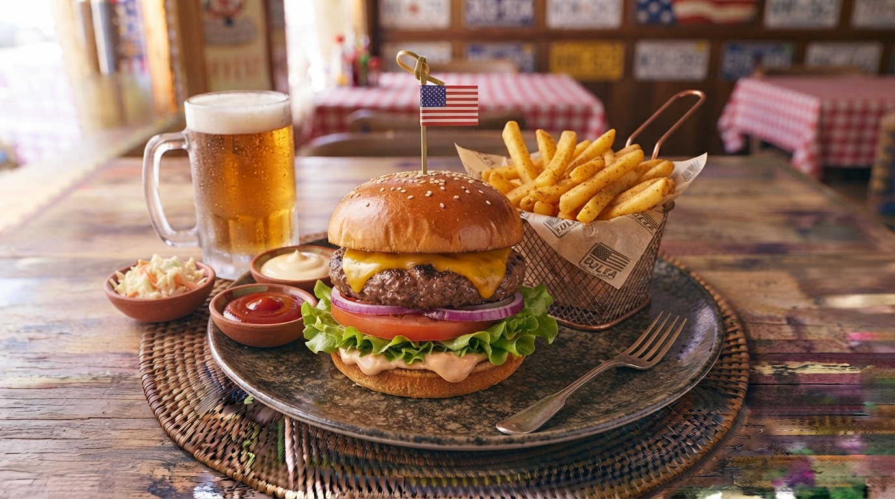

Cheeseburger Clássico Americano
O ícone do fast-food mundial. Carne bovina suculenta grelhada, fatia de queijo cheddar derretido, alface fresca, tomate, cebola e molho especial dentro de um pão brioche macio.

⏱️ Tempo: 25min
🍽️ Rendimento: 4 porções
🔥 Dificuldade: Fácil
Ingredientes
- 600g de carne moída (fraldinha ou acém com gordura)
- 4 pães de hambúrguer (brioche)
- 4 fatias de queijo cheddar real
- Folhas de alface americana e rodelas de tomate
- Sal, pimenta-do-reino e manteiga para o pão
Modo de Preparo
- Molhe as mãos e divida a carne em 4 bolas iguais, moldando os hambúrgueres sem apertar demasiado. Tempere com sal e pimenta.
- Grelhe numa chapa bem quente com um fio de óleo por cerca de 3 minutos de cada lado.
- Coloque a fatia de queijo cheddar por cima da carne nos minutos finais e abafe para derreter.
- Doure levemente os pães com um pouco de manteiga na chapa.
- Monte o hambúrguer com o pão, alface, tomate, a carne com queijo e feche.